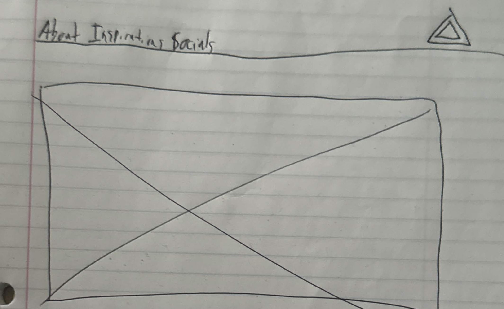

- Main image is a slideshow of various work that I've done.
- Big text overlayed over it with something like "Hey, all!" over the slideshow.
- Enough space below to indicate that there's more to the website.
The lecture the professor gave did a great job at explaining the difference between margin and padding. In fact, the professor has done an incredible job at explaining the material of the course. No paths broke, even after changing the names of files. Nothing was confusing, I understand how to change specific elements via following the instructions. The display property worked perfectly fine and I understand that it’s used to change how text gets displayed on a site such as changing a tag to be displayed vertically rather than horizontal. Nothing feels confusing so far. I’m honestly struggling to get this around 200 words since this assignment was very smooth.
Feedback from Mark Chavez
Positioning fixed made the most sense to me. It fixes an element to whatever location you assign it to. That’s what happened with the footer element. We were required to lock the footer to the bottom right of the screen and as a result it stayed there even while scrolling up and down the site. From what I can understand, using ‘Position: Relative;’ positions an element relative to its normal position in the document flow. Occupying it's original space within the website's layout. ‘Position: Absolute’ causes this to be ignored by other elements surrounding it. Essentially making it an overlay and positions said element next to its closest positioned ancestor.
The Z-Index element controls the stacking of elements on the site. Determining whether an element appears over or under an element. If the Z-Index element has a high number than it will be on top. A lower or even a negative number causes the element to appear behind within the imaginary Z-Axis. While useful for creating overlays or keeping important elements on top no matter what. Overuse of position elements can create problems such as a cluttered website that messes with the natural hierarchy. From my own testing it’s best to use positioning in moderation and only on certain elements.
Mark seemed to think that my site was well-designed. Having very little issues with the site overall. He did point out a few changes that could be made such as fixing the link on my about page and naming the Checkpoint One title on the menu to just Checkpoint. I didn’t even catch the fact that the naming wasn’t consistent on the pages, so I thank Mark for pointing out something so obvious to me.
Mark believed that including icons or changing the text colors on the menu would help with the hierarchy. I like the former idea a lot, I need to find the time to draw up simple icons and figure out if I can include symbols alongside text within HTML. The latter about changing the colors I don’t think would help much. At least it’s not that important compared to the location of the menu, in my opinion.